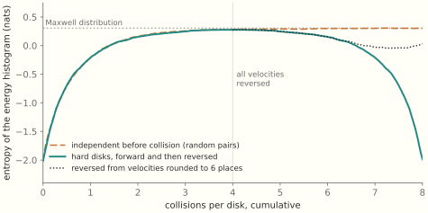
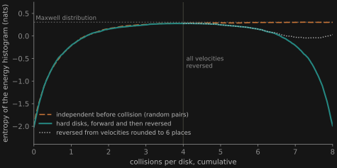

The Demon Is a Learner
Closed physical evolution forgets nothing, so forgetting costs heat. Learning machines live in Aristotle’s world, where every motion is forced, and they pay for what they discard
This essay follows The Standard of Motion, which asks what each mechanics takes to need no cause. This one asks what everything else costs. The derivations behind it are on the mathematics page, which continues the first essay’s companion. That page also derives Boltzmann’s H-theorem and collects ten tools of statistical mechanics at work in machine learning.
A neural network learns by gradient descent. At each step its weights w move against the gradient of a loss L: w \leftarrow w - \eta\,\nabla L(w). Shrink the step \eta toward zero and the update becomes an equation of motion, \dot w = -\nabla L(w). The weights move only while a force pushes them, and their velocity is proportional to that force. Where the loss is flat, they stop.
This is Aristotle’s law of motion. In Michał Heller’s reconstruction, which The Standard of Motion follows, Aristotle’s second law is F = m\cdot v: force produces velocity, and a body with no force on it comes to rest. Newton replaced velocity with acceleration, and the world of free motion opened up. Learning machines never left Aristotle’s world.
That world has a price list. Closed physical evolution conserves information, so a system that shrinks its own possibilities, as a learner does, has to send the difference somewhere. The unit of the price is the bit: forgetting one costs at least kT\ln 2 of heat, where T is the temperature and k is Boltzmann’s constant. Algorithmic information theory says how many bits a single state holds, and with it what a learner can avoid paying. A learner is then a Maxwell demon, the imagined sorter of molecules who turns knowledge into work, set down in Aristotle’s world. It extracts predictions from its environment as far as it can compress that environment into a form it can use, and it pays for what it discards.
Aristotle was right about a regime
Carlo Rovelli has argued that Aristotle’s physics is “a correct and non-intuitive approximation of Newtonian physics in the suitable domain (motion in fluids)” (Rovelli 2015). A stone dropped into water speeds up briefly and then sinks at a steady speed set by its weight and the water’s resistance. Rovelli’s drag is quadratic, as it is for fast motion through air or water, so the steady speed grows as the square root of the weight. Aristotle said that heavier bodies fall faster and denser media slow them down. In Rovelli’s words, “What Aristotle does not have is only the square root.”
With viscous drag, the kind that dominates for small or slow bodies, even the square root goes, and Aristotle’s law holds exactly. Newton’s equation for a body of mass m pushed by a force F against linear drag is m\ddot x = F - \gamma\dot x. Write it as a pair: \dot x = v,\qquad \frac{m}{\gamma}\,\dot v = \frac{F}{\gamma} - v. When inertia is small compared with drag, the velocity relaxes almost at once to F/\gamma and then follows it. Andrey Tikhonov’s theorem on singular perturbations (1952) makes this precise: the motion collapses onto the slow manifold v = F/\gamma, and what remains is the first-order law \dot x = \frac{F}{\gamma}. Heller’s m in F = m\cdot v plays the role of the drag coefficient \gamma here. The quantity that must be small is not m/\gamma, which is a time, but mk/\gamma^2, where k, here not Boltzmann’s constant, measures how steeply the force changes with position. For a spring of stiffness k, the motion is overdamped, sliding to rest without oscillating, once mk/\gamma^2 falls below 1/4, and the first-order law is accurate well below that. The mathematics page derives the reduction and shows the same threshold from the other side, where the damped oscillator’s spiral turns into a node.
Gradient descent is this limit with the loss as potential energy, F = -\nabla L. Its qualitative theory, the study of what its orbits do without solving for them, is simple, and learning relies on that simplicity. The loss decreases along every trajectory, so it serves as a Lyapunov function, and the flow has no cycles. Stanisław Łojasiewicz proved in 1963 an inequality for analytic functions whose consequence is that every bounded trajectory of such a gradient flow has finite length and converges to a single critical point. Boris Polyak’s condition of the same year, now called the Polyak–Łojasiewicz condition, says that the squared gradient bounds the height of the loss above its minimum. It gives convergence at a geometric rate. The Standard of Motion adds a structural point: among all dynamical systems, gradient flows are the robust ones, and frictionless conservative motion is the fragile exception. Learners live in the robust regime.
Real training adds noise and momentum, and neither takes it out of Aristotle’s regime. Stochastic gradient descent estimates the gradient from a small batch. For small steps it behaves like a diffusion, dw = -\nabla L(w)\,dt + \sqrt{\eta/B}\;\Sigma(w)^{1/2}\,dW, where B is the batch size and \Sigma the covariance of the per-example gradients (Li, Tai and E 2017). The drift is still first-order. The noise, though, is anisotropic and changes with position, so SGD does not settle into the Gibbs distribution e^{-L/T}, the equilibrium of a system with energy L at temperature T, as it would if the noise were isotropic and constant. Pratik Chaudhari and Stefano Soatto showed that it settles into a nonequilibrium state concentrated on a different effective potential, and that its most likely trajectories can circulate (ICLR 2018).
Momentum looks like a return to Newton. Polyak’s heavy-ball method of 1964 is literally a body with inertia and constant friction. But with the momentum held fixed, as in practice, the dynamics reduce to a time-rescaled gradient flow as the step shrinks (Kovachki and Stuart 2021). On time scales longer than about 1/(1-\beta) steps, for momentum coefficient \beta, the inertia is invisible. The exception is Nesterov’s accelerated method in its original form, with momentum rising toward 1, whose continuous limit has friction 3/t that fades over time (Su, Boyd and Candès 2016). That version grows more Newtonian as it runs.
The same regime holds one level up, for distributions. Richard Jordan, David Kinderlehrer and Felix Otto showed that the density of an overdamped particle in a potential L, with isotropic, constant noise, flows downhill on the free energy \int L\rho + T\int\rho\log\rho, a mean energy minus a temperature times an entropy. Downhill is measured by the Wasserstein distance, the cost of carrying one distribution onto another (JKO 1998). Velocity proportional to force again, now for a whole cloud of particles. A recent review by Emmy Blumenthal and colleagues collects these connections between control, inference, transport and thermodynamics for physicists (2026).
In a third geometry the drag depends on position. Mirror descent moves the prices of the bookmaker in The Bookmaker Is a Learner. It also moves a policy under natural policy gradient. It takes its gradient steps in the coordinates \log p of a probability distribution p, not in p itself. In the limit of small steps it is a gradient flow under the Fisher information metric, whose inverse is \mathrm{diag}(p): \dot p_i = -p_i\Bigl(\partial_i L - \sum_j p_j\,\partial_j L\Bigr). Heller’s m, the drag coefficient, becomes 1/p_i. Under a given force, a probability near zero barely moves. Evolutionary game theory knows this equation as the replicator dynamics, with fitness in place of -\nabla L. Its discrete step minimizes the loss plus a divergence from the current point, divided by the step. Here the divergence is the Kullback–Leibler divergence, a directed measure of how far one distribution lies from another. JKO build their flow from the same kind of step, with the squared Wasserstein distance in its place. Three geometries, one law: velocity follows force, and where the force vanishes the motion stops.
A gas of balls
Newton’s world has a property that Aristotle’s lacks. A closed system evolves by a Hamiltonian flow, and Hamiltonian flows preserve phase-space volume. This is Liouville’s theorem, and The Standard of Motion reads it as a second freedom: closed evolution loses no information. Take a probability density \rho over the states of a closed system. Its entropy -\int\rho\ln\rho, a measure of how spread out the density is, stays constant forever.
Yet a gas in a box relaxes. Its molecules settle into one distribution of speeds and stay there, and no gas has been seen to run the film backward. A seminar I attended, run by Piotr Biler around 2003, took this on directly. From the mechanics of an ideal gas, with the molecules as balls, we derived the second law of thermodynamics: entropy does not decrease. The derivation is Ludwig Boltzmann’s H-theorem of 1872, and it is mechanics until one line.
Two colliding balls exchange momentum along the line between their centers. The collision conserves energy and momentum, and it runs equally well backward. To follow the distribution of velocities, you count how many collisions of each kind happen per unit time. That count depends on how many pairs with given velocities are about to meet, and mechanics does not supply that number. Boltzmann assumed that two balls about to collide are independent, so that the number of such pairs is the product of the two one-ball densities. The rest is algebra. The entropy of the velocity distribution cannot fall, and it stops rising only at Maxwell’s distribution.
That line is where the arrow of time enters. The collisions are symmetric in time, and the assumption is not. Assume instead that balls are independent just after they collide, and the same algebra proves that entropy falls. Josef Loschmidt objected in 1876 that reversing every velocity turns any entropy-raising history into an entropy-lowering one, so mechanics alone cannot make entropy rise. In the reversed gas the assumption fails, because each incoming pair is an outgoing pair of the original run, correlated by the collisions it has had.
Loschmidt’s reversal can be run. More than twenty years after the seminar, we simulated a two-dimensional version of its gas: two thousand hard disks in a box, all starting at one speed. A second run imposes Boltzmann’s assumption directly, by drawing colliding pairs at random. The two entropy curves coincide, which is the H-theorem at work. At four collisions per disk we reversed every velocity in the mechanical gas, and its entropy fell back to where it began. A third run reversed from velocities rounded to six decimal places. Each collision per disk multiplies a typical error by about a hundred. After about two and a half collisions per disk the rounded gas leaves the exact curve, and its fall stops.


Nothing left the gas. The entropy of the joint distribution of all the balls stays constant throughout, by Liouville’s theorem. If the balls start uncorrelated, every unit of entropy gained by the one-ball distribution, summed over the balls, is a unit stored in correlations among them. The entropy that rises belongs to a description that keeps one ball at a time. Such a many-to-one description is called a coarse graining. Boltzmann’s assumption says that this description may discard the correlations, because none of them will come back as an incoming pair. In a gas prepared by ordinary means that is true, since nothing has tuned its correlations to its future. So the H-theorem is a theorem about forgetting, and what forgets is the description. The gas gave up nothing.
A description forgets for free. A physical system that shrinks its own possibilities has to send the difference somewhere.
What forgetting costs
One fact turns Aristotle’s world into an economy: that world violates Liouville’s theorem. The gradient flow \dot w = -\nabla L expands volume at the rate -\operatorname{tr}\nabla^2 L. That rate is negative wherever the loss curves upward on balance over directions, as it does near a minimum. A cloud of possible weight settings shrinks toward the bottom of the basin. That is what learning is supposed to do, and a closed Hamiltonian system cannot do it. A physical law that contracts volume is always the shadow of a system coupled to a medium, and the medium takes up the volume the system loses. The mathematics page derives friction and noise from a closed Hamiltonian bath.
The volume a system loses is entropy. Rolf Landauer turned that exported entropy into a price (1961). Erasing a bit of unknown value, resetting it to 0 whatever it held, maps two logical states onto one. Charles Bennett gives the argument in the form used here (Bennett 2003):
because Hamiltonian/unitary dynamics conserves (fine-grained) entropy, the entropy decrease of the IBDF during a logically irreversible operation must be compensated by an equal or greater entropy increase in the NIBDF and environment. This is Landauer’s principle.
The IBDF are the information-bearing degrees of freedom, the bits; the NIBDF are everything else in the machine. When the environment is a heat bath at temperature T, the entropy k\ln 2 per erased bit leaves as heat of at least kT\ln 2. Antoine Bérut and colleagues measured the bound in 2012 with a colloidal bead in a double-well laser trap, approaching kT\ln 2 as they slowed the erasure down (Bérut et al. 2012). Whether Landauer’s principle is independent of the second law is still argued, by John Norton among others. Bennett’s 2003 notes reply to some of the arguments.
Who Teaches the Weights? described a learner that narrows its behavior, so that “alternatives the model could once produce stop appearing.” That essay counted the loss in what the model can still learn. Landauer’s principle counts a cost on another level: the heat of a cloud of possible weights shrinking toward a minimum.
Computation itself need not pay. Bennett showed in 1973 that any computation can be done by a logically reversible machine: compute, copy the answer, then run backward to clean up (Bennett 1973). Edward Fredkin and Tommaso Toffoli built reversible logic from idealized colliding billiard balls (1982), and Richard Feynman designed a Hamiltonian whose evolution runs a reversible program (1985; reprinted 1986). What costs is throwing information away.
The same accounting settles Maxwell’s demon. The demon watches molecules at a trapdoor between two chambers and lets fast ones through one way and slow ones the other, building a temperature difference without doing work. In Leo Szilard’s version of 1929, the demon learns which half of a box holds a single molecule and extracts kT\ln 2 of work from that one bit. Bennett showed that the measurement can be done reversibly. The demon pays when it clears its memory to measure again, and the payment is at least what it gained (Bennett 1982).
The entropy of one state
Statistical mechanics assigns entropy to ensembles. Gibbs’s entropy -\int\rho\ln\rho belongs to a probability distribution over states, not to any state. A single configuration of a gas, taken alone, has no entropy in this sense. Boltzmann’s entropy gives it one only through a choice of macrostates, a coarse description such as the histogram of energies in our simulation. The Kolmogorov complexity K(x) of a string, the length of the shortest program that prints it, gives it one without that choice. For a computable distribution P, the average of K over P matches Shannon’s entropy: 0 \le \sum_x P(x)\,K(x) - H(P) \le K(P) + O(1) (Grünwald and Vitányi 2008, Thm 10). On average, the bits needed to describe a typical state equal the bits of uncertainty in the ensemble. But K(x) is defined for the one state. Péter Gács built a coarse-grained algorithmic entropy for single states of a physical system on this footing (1994).
Wojciech Zurek used K to define the entropy a demon actually faces (Zurek 1989). His physical entropy is “the sum of the missing information (Shannon’s entropy) and of the algorithmic information content — algorithmic randomness — present in the available data about the system”: S = H(\text{state}\mid d) + K(d), where d is the demon’s record. A measurement shrinks the first term and grows the second. Zurek showed that for a system in equilibrium, “the decrease of ignorance is, on the average, compensated for by the increase of the size of the minimal record” (Zurek 1998). So on average the demon cannot beat the second law. A single run can come out ahead, but keeping only the lucky runs needs a record of which runs were lucky, and that record costs, on average, at least what the luck gained.
Zurek’s sum has a familiar shape. A data record d and the residual uncertainty given d make a two-part code: the length of a model plus the length of the data given the model. That is the minimum description length principle of statistics. The demon’s thermodynamic account and a learner’s model-selection account have the same form.
The bound that keeps single states honest is Liouville’s theorem in algorithmic form. If a state evolves by a computable deterministic law f for time t, then x_t can be described by giving x_0, the law and the time: K(x_t) \le K(x_0) + K(f) + K(t) + O(1). Since K(t) grows only like \log t, deterministic dynamics with a short law cannot raise a state’s algorithmic entropy by more than a logarithm plus the law’s own complexity. Aram Ebtekar and Marcus Hutter, who prove this and a full algorithmic second law built on Gács’s entropy, draw the consequence: “randomness (which in classical physics comes from coarse-graining) is necessary for substantial entropy production” (Ebtekar and Hutter 2025). Entropy grows because observers describe the world coarsely, not because the fine-grained state gets more complex.
Complexity also refines Landauer’s price. Bennett, Gács, Ming Li, Paul Vitányi and Zurek worked out what it costs to turn one string into another (1998). Write K(y\mid x) for the length of the shortest program that prints y given x. Converting x into y needs about K(y\mid x) bits supplied and about K(x\mid y) bits erased. The net dissipation is about kT\ln 2\,\bigl[K(x\mid y) - K(y\mid x)\bigr] \approx kT\ln 2\,\bigl[K(x) - K(y)\bigr]. They draw the moral with the digits of \pi. A demon that erases a string of n of them “without taking the trouble to understand it” pays for n bits. A demon that recognizes the digits as \pi compresses them reversibly into a short program first, and erases that. Understanding lowers the bill. A learner that has found the regularity in its data stands where the second demon stands.
Artemy Kolchinsky and David Wolpert sharpened this for Turing machines (2020). On a machine built to be reversible for random inputs, running program p costs heat proportional to \ell(p) - K(\text{output}), how much longer the program is than the shortest one with the same output. Producing an output from its shortest program costs almost nothing. No computable realization of a computation escapes one cost: K(\text{input}\mid\text{output}), what the computation forgets about where it started. That cost can be paid in the complexity of the machine instead of in heat.
The kinship between computation and statistical mechanics goes further. John Baez and Mike Stay treated the halting programs of a universal computer as the microstates of a gas, with log running time as energy and program length as volume (Baez and Stay 2012). Gregory Chaitin’s halting probability \Omega is then a partition function, the normalizing sum of a Gibbs distribution, evaluated where the analogue of temperature is infinite. The bookmaker of The Bookmaker Is a Learner runs on this mathematics. Its cost function C(q) = b\log\sum_{i=1}^n e^{q_i/b} where q_i counts the shares sold on outcome i, is a log-partition function with temperature b. Its prices are Gibbs probabilities, and its worst-case loss, b\log n, is temperature times maximum entropy. The bookmaker, too, pays for what it does not know, and at a fixed rate. A nat is the unit of entropy with natural logarithms, about 1.44 bits. Each trader is paid b for every nat by which they reduce the surprisal of the outcome that occurs, its negative log probability. Szilard’s engine yields kT per nat, which is kT\ln 2 per bit. The traders are the bookmaker’s demons.
The demon is a learner
The arrow of the H-theorem rests on something not knowing something. Two balls about to collide carry no trace of each other. The noise of a heat bath is ignorant in the same way. It is set before the system arrives and knows nothing of the distribution it acts on. Any process driven by such noise, with its law held fixed, drifts toward the stationary distribution of that law, by a theorem of the same form. Undoing that drift takes more. Brian Anderson showed in 1982 that a diffusion has a time reversal, with the same noise, but its drift depends on the density at every moment, through the gradient of the log density, called the score. A diffusion model learns the score from data, and with it turns noise into samples. No bath has such knowledge. A learner is a device for acquiring it. A demon goes one step further and builds the thing Boltzmann’s assumption says is absent, a correlation with the particular state in front of it.
A demon gains work from what it knows about its environment. A learner gains predictions. For a learner that is a physical system in a bath, several results put the two on one ledger. Where it is not, they share only a formula.
The most direct is by Alexander Boyd, James Crutchfield and Mile Gu (2022). They consider agents that extract work from a stream of data by exploiting its structure, and ask which agent extracts the most. The work-maximizing demon is the maximum-likelihood learner: choosing one is equivalent to choosing the other.
Boyd, Dibyendu Mandal and Crutchfield showed what such a demon must contain (2017). An information ratchet, a demon that reads a tape of symbols and writes them back, can harvest correlations in its input only if its own memory reflects the structure that generated them. They call this the thermodynamics of requisite variety, after W. Ross Ashby’s law that a regulator needs as much variety as what it regulates.
Susanne Still, David Sivak, Anthony Bell and Gavin Crooks bounded the cost of memory that does not pay its way (2012). A physical system driven by a changing signal keeps some information about the signal’s past, measured as mutual information: the bits that knowing one saves in describing the other. Part of that information predicts the signal’s future, and part does not. The average work the system dissipates is at least kT times the part that does not: \langle W_{\text{diss}}\rangle \ge kT\,(I_{\text{mem}} - I_{\text{pred}}). Memory without predictive value is paid for in heat. An efficient memory keeps what predicts and does not take up the rest.
Susanne Still later reached a bound of the same shape for a full engine cycle (2020). Sadi Carnot showed that the fraction of its heat an engine can turn into work depends only on the two temperatures it works between. The absolute scale of Thomson and Clausius gave that fraction the form 1 - T/T', for T' > T. Still’s engine writes its memory at T and extracts work at T'. Its efficiency \eta, no longer the step size, reaches Carnot’s limit only if all of its memory is relevant to the work: \eta = 1 - \frac{T}{T'}\,\frac{I_{\text{mem}}}{I_{\text{rel}}}, where I_{\text{rel}} is the part of the memory relevant to extracting work. Each bit of irrelevant memory lowers the efficiency. Minimizing the bound on the engine’s dissipation gives the information bottleneck, a standard method of compressing data for prediction, with the ratio of the two temperatures as its trade-off parameter. Still’s memory is never cleared. It is overwritten, so her bill falls at writing, where Bennett’s falls at erasure. The payment can fall at either step, and only the total is bounded.
Training a network in software has no literal engine cycle, since Carnot’s argument needs a conserved energy and a loss is not conserved. It does have something shaped like one. A Boltzmann machine, a network of binary units with a Gibbs distribution over their states, learns in two strokes (Ackley, Hinton and Sejnowski 1985). With the data clamped on its visible units, it settles and records which units fire together. Then it runs free and records the same correlations from its own imaginings. The weights move by the difference. The data hold a physical network away from its own equilibrium by a free energy of T times the divergence between them. Still reads that as heat the network must shed when it predicts, and learning as lowering it. Read the machine instead as an engine, which is our reading and not hers, and the gap between data and model does the work of the gap between T and T'. When the two strokes agree the engine stalls, as Carnot’s does when T' = T, though a model too small for the data stalls with a gap left.
Sebastian Goldt and Udo Seifert brought a literal bound to neural networks (2017). They model the weights as physical degrees of freedom in a heat bath, learning by Langevin dynamics, gradient flow with thermal noise. The information the network acquires about its training labels is bounded by the entropy production of the weights, their change in entropy plus the heat their dynamics dissipate. This concerns the weights as a physical system, not the processors that compute them, which dissipate many orders of magnitude more. It shows where the floor is.
Even the learner’s objective has the form of a free energy, measured in code length. Geoffrey Hinton and Drew van Camp asked how many bits it takes to send a network’s weights together with its errors on the data (1993). If the sender draws the weights at random from a distribution Q and codes them under a prior P, the receiver recovers the random bits used in the draw, the “bits back” of their argument. The net cost is the divergence of Q from P plus the expected misfit. They identified this cost with the Helmholtz free energy of statistical mechanics, minimized by a Boltzmann distribution. Variational inference in machine learning minimizes the same quantity, as the negative of the evidence lower bound. Read as machine learning, the divergence is a regularizer, and a temperature, where one appears, sets its strength. How Does a Policy Improve? meets this structure in reinforcement learning, where improving a policy against a prior maximizes expected value minus a temperature times a divergence, and the improved policy is a Gibbs tilt of the prior.
Karl Friston’s free energy principle takes this objective much further. It claims to read any system that self-organizes to a steady state, set off from its surroundings by a statistical boundary, as minimizing a variational free energy, and so as doing Bayesian inference (Friston 2019). The quantity is the same, and the shared name is a trap. It counts surprise against a model, in nats, and nothing in it is paid. Turning those nats into joules takes a physical temperature and a bath, which the ledger of this essay needs and the variational quantity does not contain. That a system’s thermodynamic free energy directly encodes its variational free energy is a further hypothesis, which Alex Kiefer has worked out for the brain (2020).
What a bounded observer can compress
A learner is a bounded observer. The gas of balls puts a number on the bound. To run one gas back through one more collision per disk, an observer needs about two more decimal places in every position and velocity, and the demand grows without limit as the reversal reaches further back. No bounded observer keeps up for long. A diffusion model sets itself a different task. It recovers a distribution and leaves each particular history alone, and for that it needs the score. The forward process, which turns data into noise, produces entropy, at most the divergence of the data from the noise, however long it runs. Akhil Premkumar argues that this total is the floor on what a perfectly trained network must store (2025). That floor does not grow with the time reversed, and a real network stores less and is better for it. No observer can hold the history of each particle. A learner can compress the structure of a population.
Giving up each history for the structure is an old move. Henri Poincaré founded the qualitative theory of differential equations in the 1880s, and his work on the three-body problem showed why it is needed: most orbits have no solution in closed form. He studied invariants, recurrence and the shape of orbits without solving for the orbits. Stephen Wolfram’s account of physics makes that move into a principle. In “Computational Foundations for the Second Law of Thermodynamics” (2023) he writes that “it now seems as if all three of general relativity, quantum mechanics and statistical mechanics are actually derivable, and from the same ultimate foundation: the interplay between computational irreducibility and the computational boundedness of observers like us.” The world’s fine-grained evolution cannot be shortcut. An observer gets by on the parts of it that can.
Ebtekar and Hutter’s bound says this from the other side. Deterministic dynamics with a short law cannot raise a state’s complexity by much, so a bounded observer’s coarse description supplies the second law. The same description sets the work a demon can extract and the predictions a learner can make.
Entropy relative to a coarse graining invites an objection: is the second law then a fact about us? Cosma Shalizi and Cristopher Moore give an answer with two halves (2003). The observer supplies the observables. The dynamics then decides which refinement of them makes states that “predict their own future”. Those are the macrostates, and they are the optimal predictors of what the observer can measure. In these terms, Boltzmann’s assumption makes the one-ball distribution such a state for a gas prepared by ordinary means. The reversed gas lies outside that ensemble: the same histogram, with the opposite future. Aristotle’s law passes this test, once momentum has relaxed and position alone predicts what comes next. A macrostate is what a predictor needs to keep. A joint-embedding predictive architecture, or JEPA, searches for such states directly, learning a representation that predicts its own next value. It shows what the observer’s half of the answer is for: a constant representation predicts itself perfectly, so a JEPA needs an anti-collapse term to do what the observables do in Shalizi and Moore’s construction. So a physicist’s macrostate and a learner’s representation answer one question, and the learner gets to find its answer from data.
Compression is not enough, though. A message encrypted under a short key has high mutual information with the plans it hides, and an observer without the key can do nothing with it. Yilun Xu and colleagues define usable information relative to the predictors an observer can afford (2020), the notion Who Teaches the Weights? used for what a document implies. Unlike Shannon’s information, it can be created by computation: decryption adds none of the one and plenty of the other. Bennett’s logical depth (1988) is a cousin, the time a nearly shortest program takes to run: a string can be short to state and slow to unpack. A ciphertext shows the difference. Its short program runs fast, and what the observer lacks is the program. The thermodynamic ledger does not see any of this. Decryption can in principle run reversibly, at no cost in heat, and Still’s bound counts the same bits before and after. Bits price what an observer stores and forgets, and time prices what it can do with them.
What a bounded observer can compress and still use decides the laws it sees, the work it can do, and the futures it can foresee. The Standard of Motion ends by asking which motions a computational universe makes free. A later essay on observers takes that up. Everything else moves the way a network’s weights do: only while a force pushes, and at a price.